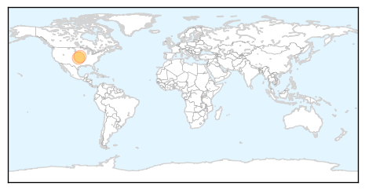

West Nile Virus
30-Day Web Trend
3 alerts, 0 warnings

30-Day Twitter Trend
0 alerts, 0 warnings

Article Locations
Article Confidences

Top Articles:
Top Tweets:
-
No tweets found for Feb 20, 2015
MERS
30-Day Web Trend
13 alerts, 0 warnings

30-Day Twitter Trend
5 alerts, 0 warnings

Article Locations

Article Confidences

Top Articles:
- 0.999
- News and Press Release Distribution
- 0.998
- News Scan for Feb 20, 2015
- 0.997
- Saudi MERS deaths surge: Health ministry
- 0.997
- Malaysia General Business Sports and Lifestyle News
- 0.997
- Saudi Mers deaths surge says health ministry
- 0.995
- Middle East respiratory illness spooks Hong Kong, brings back memories of Sars
- 0.995
- Saudi MERS deaths surge
- 0.992
- Most MERS victims are 50 and above
- 0.988
- MERS war stepped up as 5 lives lost in 1 day
- 0.984
- Metro, News, The Philippine Star
- 0.975
- PH mapping Middle East hospitals with MERS cases
- 0.973
- Filipina nurse already clear of MERS-CoV
- 0.889
- More coronavirus cases expected
- 0.853
- OFWs told to remain vigilant vs MERS-COV
Top Tweets:
- 0.532
- Cases of MERS-CoV in Saudi Arabia are Reported to WHO http://t.co/A7TASqzXGp via